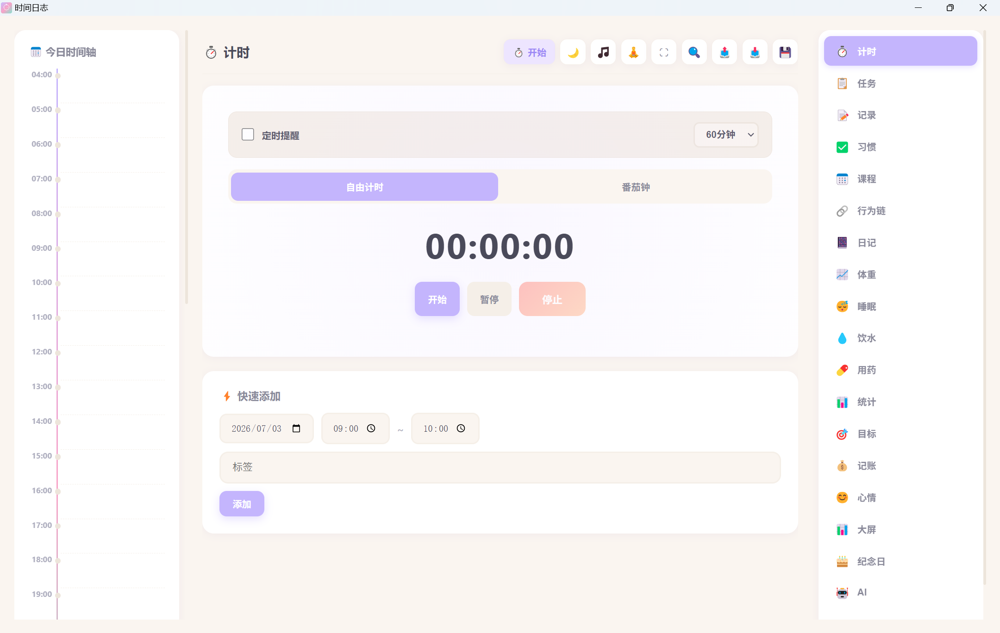
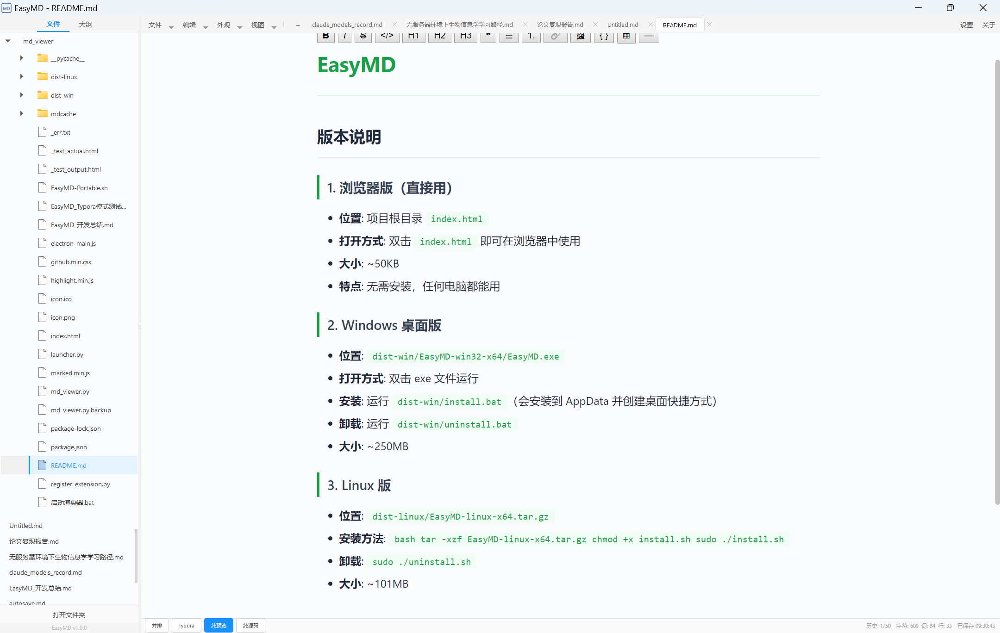

你好，我是
王多鱼
南昌大学遗传学硕士在读，研究大豆驯化。试图理解一颗种子如何被人类选择、驯化、改良，最终成为养活世界的作物。同时也用 AI 做一些提升效率的小工具 —— 毕竟科研人的时间，每一分钟都该花在有价值的事上。
研究方向
大豆驯化的遗传学机制
什么是大豆驯化？
野生大豆（Glycine soja）经过数千年的人工选择，演变为今天我们种植的栽培大豆（Glycine max）。这个过程改变了大豆的形态、产量、抗性和适应性 —— 我的课题就是从遗传学角度，揭示驯化过程中哪些基因被选择、如何被选择、以及它们如何塑造了现代大豆。
我关注的问题
- 驯化瓶颈效应 —— 从野生到栽培，大豆经历了多大的遗传多样性损失？
- 关键驯化基因 —— 控制株型、籽粒大小、开花时间等性状的基因是如何被选择的？
- 驯化与改良的分层 —— 驯化阶段选择的地方与现代育种改良选择的地方是否重叠？
- 野生资源的利用 —— 野生大豆中丢失的优异等位基因能否被重新引入栽培种？
研究方法
群体遗传学
全基因组关联分析 (GWAS)
选择信号检测
多组学整合
重测序数据分析
比较基因组学
Python / R 数据分析
个人项目
兴趣驱动，用 AI 做的一些小工具

TimeTracker
全功能时间管理应用 —— 做科研最怕时间不知不觉就没了，所以我用 AI 做了个工具来管理自己。集计时、任务管理、习惯追踪、日记、统计于一体。
- 计时器（自由计时 + 番茄钟模式）
- 任务管理 & 时间线记录
- 习惯打卡 & 健康模块
- 日记（时间轴 + 情绪 + 天气）
- 统计图表 & 数据导出
- 支持 PWA / Electron / Android
🚧 已完成，即将发布

EasyMD
轻量级 Markdown 编辑器 —— 写论文笔记需要好用的编辑器，所以又让 AI 做了一个。双击打开即用，桌面版跨平台。
- Markdown 实时渲染预览
- 代码语法高亮
- GFM 语法完整支持
- 浏览器版 ~50KB，桌面版跨平台
🚧 已完成，即将发布
碎碎念
科研之外的另一面
没有人比我更爱吃饭
研究大豆驯化的人，最懂一颗种子如何养活世界 —— 因为我就是被养活的那个人。对美食的热爱是认真的、纯粹的、毫无保留的。
不会写代码，但能让 AI 写
我不写代码，我定义问题。AI 帮我实现，我来验证和迭代。两个完整应用就是这么出来的 —— 没敲过一行代码，但每个功能都是我想要的。
想聊聊？
对大豆驯化研究感兴趣，或者想聊聊 AI 辅助科研，随时联系我。